Material Widgets¶
nuiitivet.material implements Material Design 3 widgets, with more on the way. This page showcases the available widgets — each with a screenshot and a link to the API reference. Overlay-based widgets (Dialog, BottomSheet, SideSheet, Loading) are covered in Material Overlay.
Import convention
All widgets shown below are exported from nuiitivet.material:
Text¶
Typography component for rendering text with theme-aware styles.
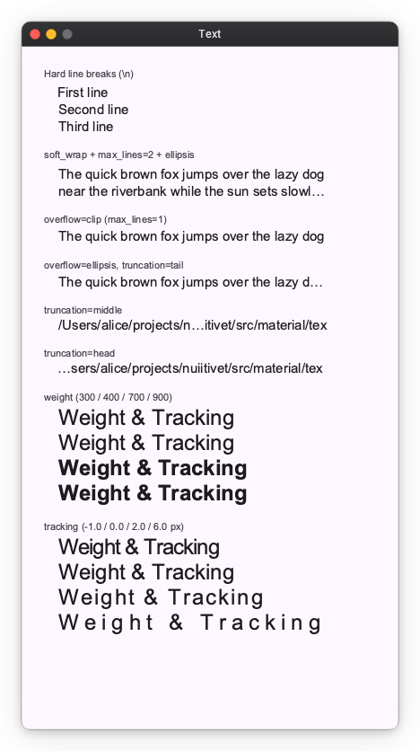
Icon¶
Material Symbols icon component. Specify a symbol name and an optional size.
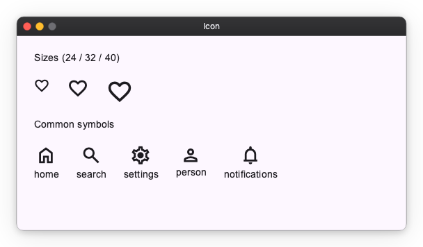
Button¶
Five M3 button styles — Filled, Tonal, Elevated, Outlined, and Text — plus icon support and disabled state.
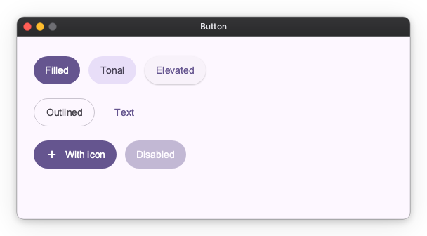
ToggleButton¶
Two-state button with selected / unselected appearance. Available in Filled and Outlined styles.
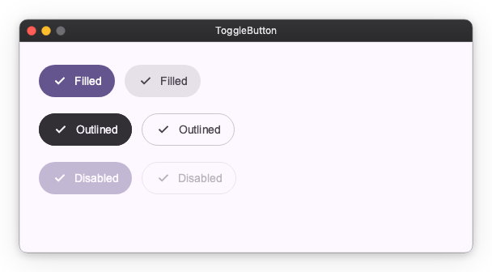
IconButton¶
Compact icon-only buttons in the standard M3 styles, plus a toggle variant.
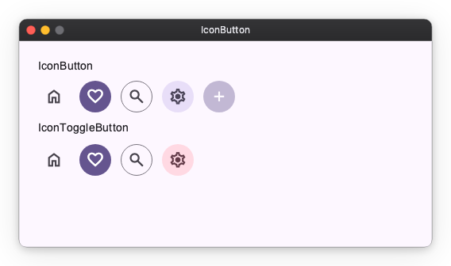
Fab (Floating Action Button)¶
Prominent action button. Multiple color variants and three sizes (small / medium / large).
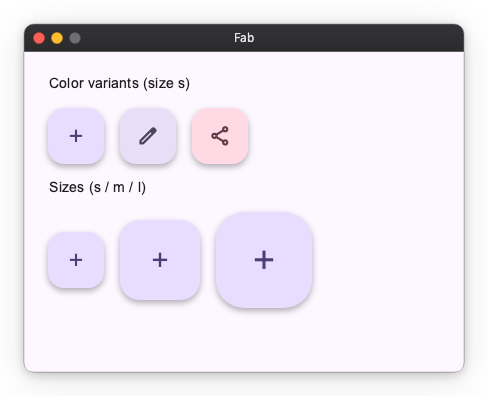
ExtendedFab¶
FAB with a label beside the icon. Toggle its expanded observable to morph between the extended pill and a circular FAB. Available in tonal and solid color variants across all three sizes.
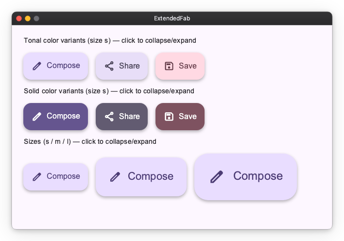
FabMenu¶
M3 Expressive FAB menu. A single is_open observable morphs the FAB between its add and close icons and reveals a stack of labelled FabMenuItem actions, dismissed by tapping outside or selecting an action.
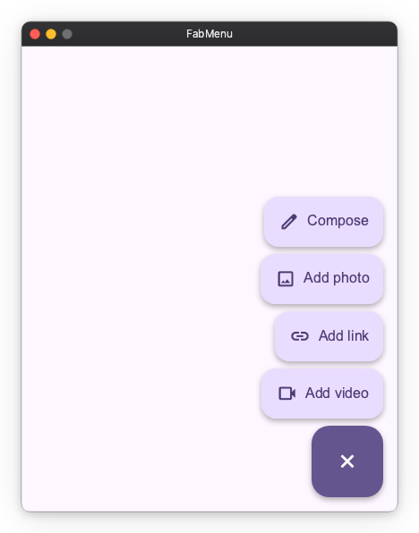
API References: FabMenu ・ FabMenuItem
SplitButton¶
M3 Expressive split button — a leading action button joined to a trailing button that opens a menu. Available in Filled, Tonal, Elevated, and Outlined styles across sizes XS–L.
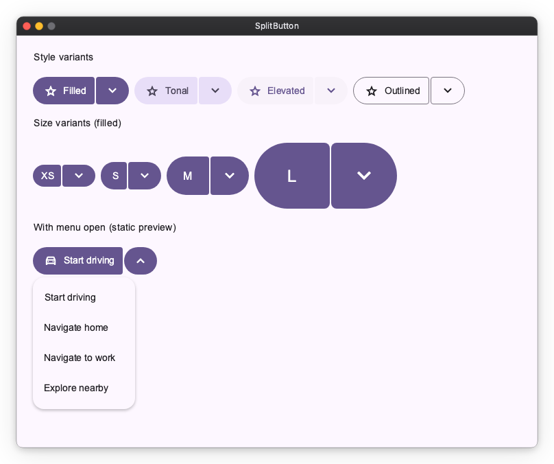
ButtonGroup¶
Group related actions. StandardButtonGroup keeps spacing between buttons; ConnectedButtonGroup connects them as a single segmented control.
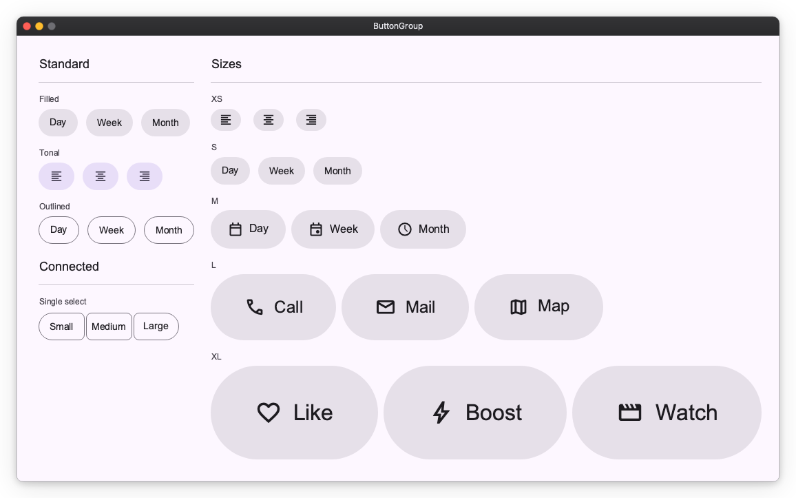
Selection Controls¶
Checkbox, RadioButton (typically grouped via RadioGroup), and Switch for boolean / single-select input.
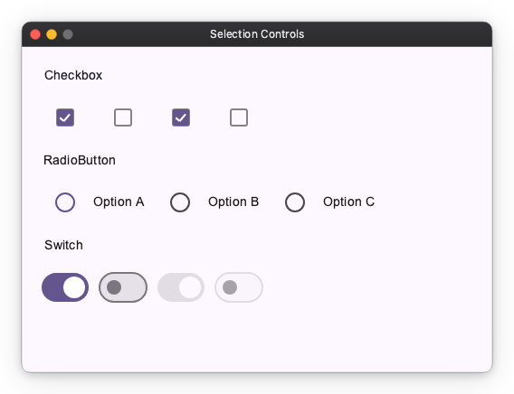
API References: Checkbox ・ RadioButton ・ Switch
Slider¶
Numeric input, split by axis. HorizontalSlider / VerticalSlider select a value in a range, the *CenteredSlider variants are anchored at zero, and the *RangeSlider variants select a min/max pair. Horizontal variants are sized with width; vertical variants with height.
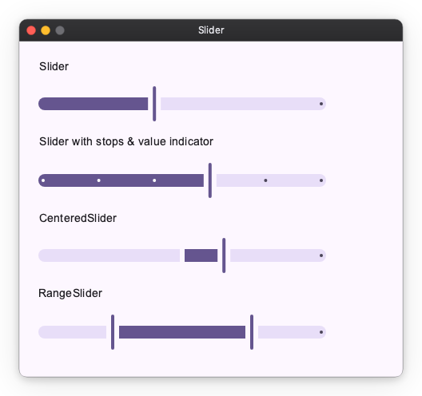
API References: HorizontalSlider ・ VerticalSlider ・ HorizontalCenteredSlider ・ VerticalCenteredSlider ・ HorizontalRangeSlider ・ VerticalRangeSlider
TextField¶
Text input, with leading icons, supporting text and error states. The filled and outlined variants come from style.
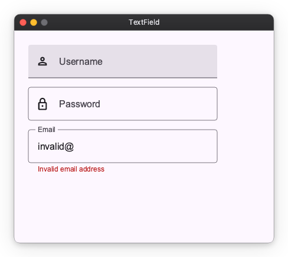
An Observable passed as value is the field's value — it is displayed, and what the user types is written into it:
nv.TextField(value=self.query, label="Search")
nv.TextField(value=self.query, label="Search", style=nv.TextFieldStyle.outlined())
A read-only source (.map(...), a computed value) has nowhere to write, so it only displays; pair it with disabled=True.
Restricting what can be typed¶
input_filter runs on every keystroke, before the value changes:
nv.TextField(value=self.pin, input_filter=nv.digits_only() | nv.max_length(4))
nv.TextField(value=self.rate, input_filter=nv.matching(r"[0-9]*\.?[0-9]*"))
nv.TextField(value=self.code, input_filter=lambda s: s.upper())
| Filter | Effect |
|---|---|
nv.digits_only() |
keeps ASCII digits, drops everything else |
nv.allow(pattern) |
keeps the characters matching pattern |
nv.deny(pattern) |
drops the characters matching pattern |
nv.max_length(n) |
truncates to n characters |
nv.matching(pattern) |
rejects the keystroke unless the whole text matches |
Combine them with |. matching is the odd one out: it judges the text as a whole and rejects the keystroke outright, which is how "at most one decimal point" is expressed.
A filter says what is typeable, not what is valid — "1." has to be typeable or the . could never be entered. Whether a finished value is acceptable belongs in is_error / supporting_text.
Reacting to the user¶
| You want to | Use |
|---|---|
| Derive something from the text | the Observable bound to value — .debounce(...), .map(...), .switch_map(...) |
| Run a side effect on every change | on_change |
Act when the user presses Enter |
on_submit |
| Act when the user arrives at, or leaves, the field | on_focus_change |
The observable is updated with or without on_change, so reach for the callback only when a change has a side effect. Neither reports the provisional text of an IME composition; both arrive once it commits.
on_submit fires on every Enter — including a repeat on an unchanged value — and never on focus loss. Setting it makes the field claim the Enter key, so a key_shortcut("enter", ...) elsewhere stops firing while the field is focused; see Interaction modifiers.
on_focus_change(focused, source) is where blur-time work goes: validating once the user is done, saving an inline edit, finishing a half-typed value. It can fire more than once with focused=True, so branch on focused rather than counting calls.
def finish_rate(self, focused: bool, source: nv.FocusSource) -> None:
if focused:
return
self.rate.value = f"{float(self.rate.value or 0):.2f}"
nv.TextField(
value=self.rate,
input_filter=nv.matching(r"[0-9]*\.?[0-9]*"),
on_focus_change=self.finish_rate,
)
SearchBar¶
A search input. DockedSearchBar is the same bar with a panel anchored below it.
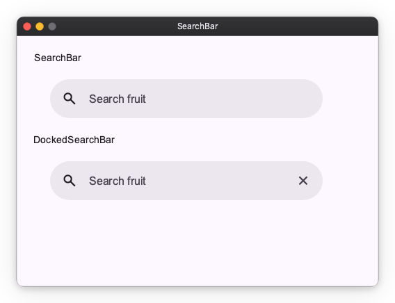
value binds exactly as TextField's does — pass an Observable and what the user types is written into it.
DockedSearchBar puts one widget in that panel, as content. It holds whatever the query currently calls for — recent searches, suggestions, results, a spinner, "no matches" — and you swap what is inside it from your own observables:
nv.DockedSearchBar(
self.query,
placeholder="Search fruit",
content=nv.Column(
children=[nv.ForEach(self.matches, lambda item, index: nv.Text(item))],
),
on_submit=self.search,
width=440,
)
content stays live while the panel is closed, so whatever drives it keeps running. Gate that with your own observable if it is expensive.
Opening and closing the panel¶
The widget drives one observable from four triggers:
| Trigger | Effect |
|---|---|
| The bar takes focus | Open — including on an empty query, where MD3 shows recent searches |
| The user edits the text | Open, even if it was just closed |
Enter |
Close, unless you pass close_on_enter=False |
| Focus leaves, or a tap outside | Close |
That default gives you the usual desktop loop for free: Enter puts the panel away, on_submit renders results on the page, and typing again brings the panel back. The close runs before on_submit, so a search that wants the panel to stay up can reopen it from inside its own callback. To keep the results in the panel instead, pass close_on_enter=False and swap content when the search returns.
Only user edits reopen it. Assigning to the bound observable does not, so filling the bar in after the user picks something leaves the panel closed:
def pick(self, item: str) -> None:
self.query.value = item # the panel stays closed
self.search(item)
Pass is_open=self.panel_open to drive the panel from your own Observable[bool], or to react to it opening and closing. Writing to it opens and closes the panel directly; omit it and the widget keeps its own, readable as bar.is_open.
In a window too short for the panel, it keeps its minimum height and extends past the bottom edge rather than covering the bar.
Escape does not close the panel yet — click outside it, or write False to is_open.
There is no full-screen search widget. Lay the screen out yourself and put a SearchBar in it; the bar keeps its focus animation there.
Not supported: an avatar slot, multiple trailing actions, and a disabled state. trailing_icon is a single generic slot — clearing the query is one thing you can wire it to, not built-in behaviour.
Card¶
Container for grouped content. Three variants — Filled, Outlined, Elevated.
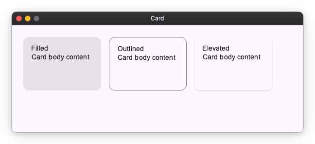
Chip¶
Compact actions and choices: AssistChip, FilterChip, InputChip, SuggestionChip.
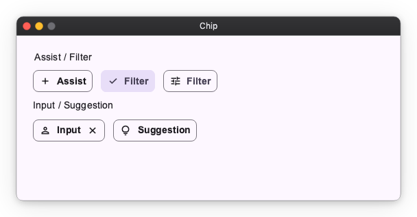
API References: AssistChip ・ FilterChip ・ InputChip ・ SuggestionChip
Badge¶
Small status indicator that decorates other widgets via a modifier. SmallBadge is a dot; LargeBadge shows a count.
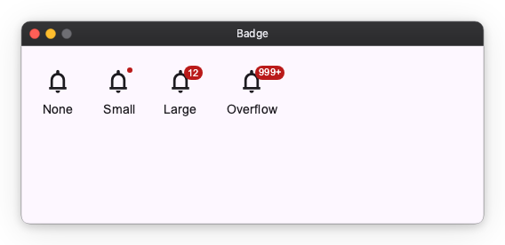
API References: SmallBadge ・ LargeBadge
Divider¶
Separator line, split by axis. HorizontalDivider draws a full-width line (sized with width); VerticalDivider draws a full-height line (sized with height). The cross-axis thickness comes from the style.
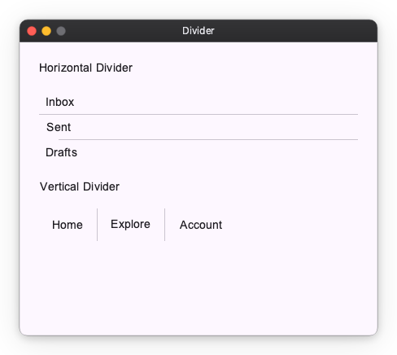
API References: HorizontalDivider ・ VerticalDivider
Progress Indicators¶
Linear and circular progress, in determinate and indeterminate variants. LoadingIndicator is the M3 Expressive shape-morphing indicator.
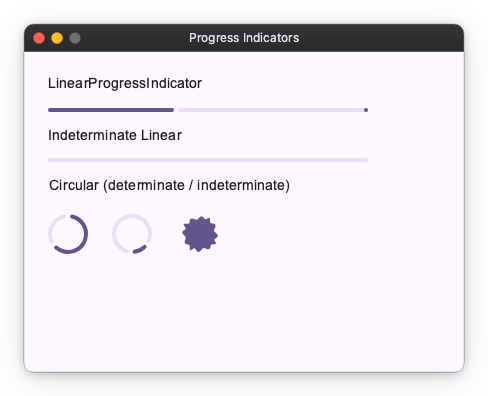
API References: LinearProgressIndicator ・ CircularProgressIndicator ・ LoadingIndicator
NavigationRail¶
Vertical navigation bar with collapsed / expanded states, badges, and an optional menu button. Pairs with Material Navigator for routing.
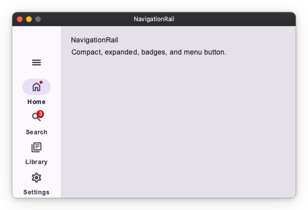
Toolbar¶
Action bar of icon buttons. DockedToolbar stretches to its container; HorizontalFloatingToolbar / VerticalFloatingToolbar are pill-shaped overlays laid out along their respective axis. Button / IconButton children are recommended per MD3; other widgets (including tooltip-wrapped buttons) are laid out as-is.
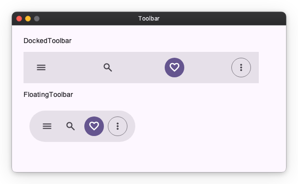
API References: DockedToolbar ・ HorizontalFloatingToolbar ・ VerticalFloatingToolbar
Menu¶
Vertical list of MenuItems. Supports leading icons, trailing shortcut/affordance text, dividers, and disabled items.
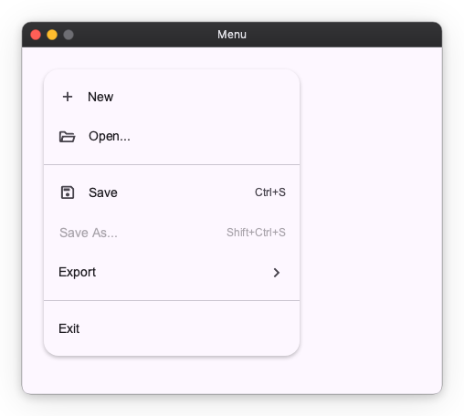
Tooltip¶
Contextual hint shown next to a target. Tooltip is a plain text label; RichTooltip supports a title, body, and action buttons.
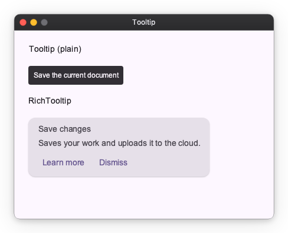
API References: Tooltip ・ RichTooltip
StandardSideSheet¶
Docked side panel that sits beside the main content area. Unlike the modal SideSheet, it is a permanent part of the layout. Pass a writable Observable[bool] as opened and the sheet animates its own width open and closed, staying mounted throughout.
opened: nv.Observable[bool] = nv.Observable(True)
nv.Row([
main_content,
nv.StandardSideSheet(panel_content, headline="Filters", opened=opened),
])
The close icon button writes opened.value = False by default. Pass on_close_click to intercept the press instead — the callback replaces the default, so updating opened becomes your responsibility:
def confirm_close() -> None:
if vm.has_unsaved_changes:
vm.show_confirm_dialog()
else:
opened.value = False
nv.StandardSideSheet(panel_content, opened=opened, on_close_click=confirm_close)
With a literal opened=True and no on_close_click, no close button is rendered: a press would have nothing to act on.
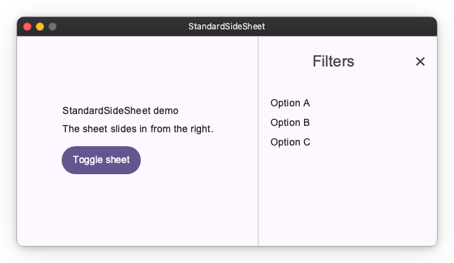
DockedDatePicker¶
A text field with a trailing calendar icon button. Tapping the icon opens a calendar in a dropdown anchored below the field; the date can also be typed directly.
value is the field's text, not a date. The date is derived from it, and so is anything the application wants to say about it — the widget flags nothing on its own, so is_error and supporting_text are derived from the same text and passed in.
self.arrival_text = nv.Observable("")
self.arrival = self.arrival_text.map(nv.parse_date) # date | None
nv.DockedDatePicker(value=self.arrival_text, label="Arrival")
See Typed Values from Text Input for the recipe, and nv.DateFormat for a pattern other than mm/dd/yyyy.
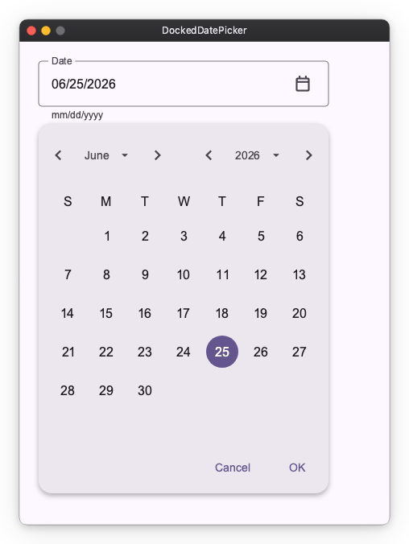
Image¶
Image is a primitive widget that is not part of Material Design. Displays a raster image from in-memory bytes. Supports contain, cover, fill, and none fit modes.
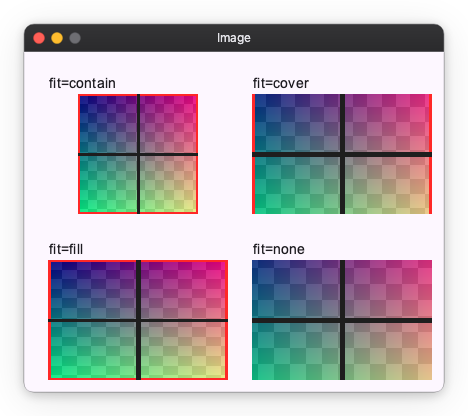